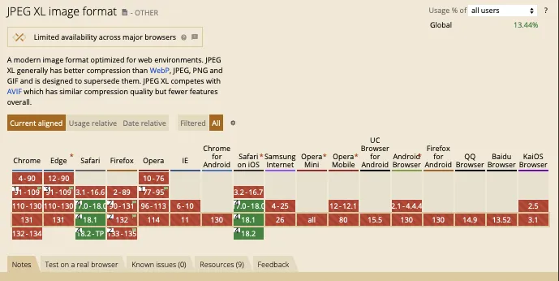

Progressive Enhancement - Introduction
Definition and Principles #
Definition: Progressive enhancement is a web design strategy that starts with a basic, functional experience for all users and then adds more advanced features for users with better browser capabilities or devices.
Principles #
- Content First: Ensure that the core content is accessible to everyone.
- Basic Functionality: Make sure essential features work regardless of the user’s browser or device.
- Enhancements: Add more advanced features and improvements that enhance the experience for those with modern browsers and devices.
CanIUse #
When new features are added to HTML, CSS, or Javascript it is a long process. First the W3C group must define exactly what the change is and how it should be work. Then after those rules are standardized the browser developers must implement the features in their code. Then users must update to the newer versions of browsers where the feature is supported. All of this means that we don't have any control over the environment where our code is run.
Because of this problem there are groups who carefully track and monitor which browsers and versions are in use. CanIUse is one of those sites. We can check any current feature of HTML, CSS, or Javascript to see where it is supported and use that information to help decide when it is safe to implement a new feature, or when we might need to apply something as an enhancement.
Take a look at JPEG XL for example. It is a new image format that has much better compression than a JPEG.

- Look in the top right corner. There is a label that says "Global 13.44%". This is the percentage of browsers in use that support this feature. It's not well supported.
- Below is a grid of boxes. Find the column for Safari. It is one of the few that is green. Note that Safari started supporting this feature with version 17, and the current version of Safari is 18.1.
- As things currently stand we should probably not use this feature yet...unless there is a way to help it fail gracefully.
Take a look at the picture element. It has very good support, and it's very purpose is to allow for different sizes and formats of images to be offered. Leveraging things like the picture element can allow us to use new improvements like jpeg-xl while still providing a good experience where it isn't supported. This is a very good application of the principle of progressive enhancement.
Other Examples #
- Google Search
- Basic Functionality: Users can perform searches and view results with basic HTML forms and plain text.
- Enhancements: Advanced users benefit from features like auto-complete suggestions, voice search, and personalized results based on their Google account and browsing history.
- GitHub
- Basic Functionality: Basic HTML structure allows users to view repositories, read documentation, and explore code.
- Enhancements: For users with modern browsers, GitHub offers interactive features such as real-time code editing, syntax highlighting, and live previews of markdown content.
- Twitter
- Basic Functionality: Users can tweet, follow others, and read tweets with a minimal HTML structure.
- Enhancements: Users with advanced browsers see additional features like embedded media previews, interactive charts, and advanced notification systems.
- The Guardian
- Basic Functionality: Articles and news content are accessible through simple HTML and CSS, ensuring readability on all devices.
- Enhancements: Enhanced features like interactive data visualizations, animations, and multimedia content are available to users with modern browsers and higher-resolution screens.
- Wikipedia
- Basic Functionality: Users can read articles, navigate through links, and search content with basic HTML.
- Enhancements: Users with modern browsers experience improved functionality like dynamic table of contents, interactive maps, and multimedia enhancements.
- Stack Overflow
- Basic Functionality: Users can ask and answer questions, view code snippets, and navigate through posts
- Enhancements: Users with modern browsers see features like syntax highlighting, code folding, and real-time updates.
- Shopify
- Basic Functionality: Basic e-commerce functionality allows users to browse products, view details, and make purchases.
- Enhancements: Users with modern browsers benefit from features like dynamic product filtering, animated transitions, and advanced checkout processes.
- A List Apart
- Basic Functionality: The website provides content through a straightforward HTML structure.
- Enhancements: Users with modern browsers see enhanced features such as interactive examples, animations, and advanced layout techniques using CSS Grid or Flexbox.
- Airbnb
- Basic Functionality: Users can search for and book accommodations with essential HTML and CSS.
- Enhancements: Advanced features include interactive maps, dynamic search filters, and responsive images optimized for high-resolution displays.
- Medium
- Basic Functionality: Users can read articles and view content with basic HTML and minimal CSS.
- Enhancements: Features such as rich text formatting, embedded media, and interactive story elements are available for users with modern browsers.
Key Elements of Progressive Enhancement in These Examples #
- Core Content Accessibility: Fundamental content and functionality are accessible and usable with basic HTML/CSS, ensuring compatibility with older browsers or devices.
- Enhanced Features: Additional functionalities and styles are layered on top, utilizing advanced CSS, JavaScript, or APIs, providing a richer experience for users with capable browsers.
- Graceful Degradation: Even if advanced features fail or are unsupported, the core functionality remains intact, ensuring a good user experience across all environments.